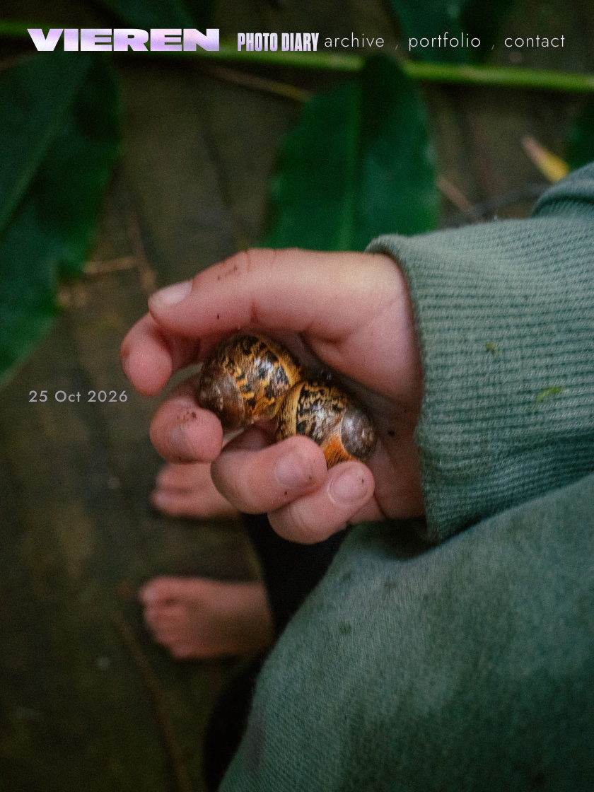

I bring a point-and-shoot everywhere I go, a Ricoh GR III. It's all behind the scenes, chasing light and beauty: sunsets and morning light. Most of my photos come from the Ricoh, the rest from my old iPhone, and they all go into a photo diary on this site.
Some days I add one frame, some days seven. Every photo came with the same chores: resize it for the web, make a small preview image, file it under the right date, publish the site, then open every social app and post it again. So I gave the chores to an agent, an AI assistant that carries out tasks for you. I drop the photos in a folder and give it the date, a tag and my caption. It puts the photo in the diary and posts it to Threads, LinkedIn, X, Substack and Facebook.
Posting one photo to five platforms by hand takes longer than taking the photo. Every platform has its own rules on top of that.
Substack Notes take six images per post and X takes four. On X, a caption over 280 characters has to be split into a thread, and the photo has to sit on the first post of that thread.
The website is the home of the work, so it goes first. The agent files every photo on the site, and the social posts use the photos from the live site.
I wrote the steps down once, and the agent runs them in the same order every time. I give it the date, the tag and the caption, and it posts my caption word for word.
I chose the Ricoh GR III as my point-and-shoot because it's fast and light. The image quality is excellent, and the camera syncs with my phone.
Photos go into a folder named after the day, or into one called unsorted. A script reads the date each photo was taken from the camera data, moves it to the right day, removes duplicates and makes a 400 px preview image.
Each day is one line in a small data file with the date, the tags and the photos. The diary page and the film strip on the homepage both read from that file, so the agent edits one file and both pages change.
I give each photo one or two tags, for example behind the scenes or portfolio. A photo tagged portfolio also goes into the portfolio on the homepage and on the portfolio page.
The agent waits until every new photo loads from the live site. Then it schedules one post for Threads, LinkedIn, X, Substack and Facebook at my next open posting time.
It also works around each platform's limits. It sends the first six photos, gives X four of them, and splits a long caption itself so the photo goes on the first post of the thread. When I add the word "story", each photo also goes to Instagram Stories.
Every post gets a label made from the date and the number of photos. If the agent runs for the same day twice, it gets back the post that already has that label, so the same photo never goes out twice.
Posts go out at their scheduled time. After scheduling, the agent reads each post back and checks that it is set for all five platforms. When a step fails, it stops and shows me the error.
From one folder and one caption, the agent updates the diary, the homepage and five social feeds.
You can use the same setup for anything you publish often.